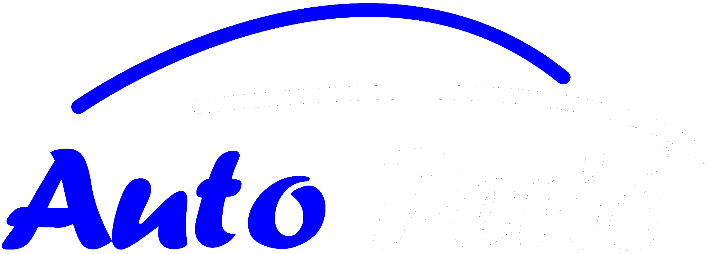

<nav class="navbar navbar-expand-lg navbar-dark bg-transparent">
  <div class="container">
    <a class="navbar-brand" routerLink="/"
      ></a>
    <button
      class="navbar-toggler"
      type="button"
      data-bs-toggle="collapse"
      data-bs-target="#navbarNavAltMarkup"
      aria-controls="navbarNavAltMarkup"
      aria-expanded="false"
      aria-label="Toggle navigation"
    >
      <span class="navbar-toggler-icon"></span>
    </button>
    <div
      class="collapse navbar-collapse justify-content-end"
      id="navbarNavAltMarkup"
    >
      <div class="navbar-nav">
        <a class="nav-link" routerLink="/about" routerLinkActive="active"
          >O nama</a
        >
        <a class="nav-link" routerLink="/contact" routerLinkActive="active"
          >Kontakt</a
        >
        <a class="nav-link" routerLink="/location" routerLinkActive="active"
          >Kako do nas</a
        >
        <a class="nav-link" routerLink="/services" routerLinkActive="active"
          >Usluge</a
        >
      </div>
    </div>
  </div>
</nav>
<hr />
<div class="container main-container" [@routeAnimation]="prepareRoute(outlet)">
  <router-outlet #outlet="outlet"></router-outlet>
</div>
